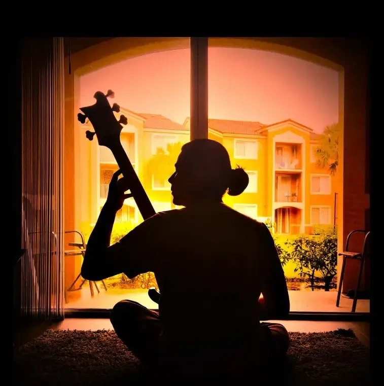

HI, I AM A BASS GUITAR PLAYER
12+ years of experience. I seek to have a versatile sound on the bass guitar and explore music through the instrument.

12+ years of experience. I seek to have a versatile sound on the bass guitar and explore music through the instrument.

Music travels through air to your ears... The bass, are the lowest end frequency, they require a lot of energy to be created. Additionally, it takes training to understand the musicality of those wobbly frequencies. During this 12 years I've been discovering and looking for all the ways music can be expressed through this simple but mysterious instrument